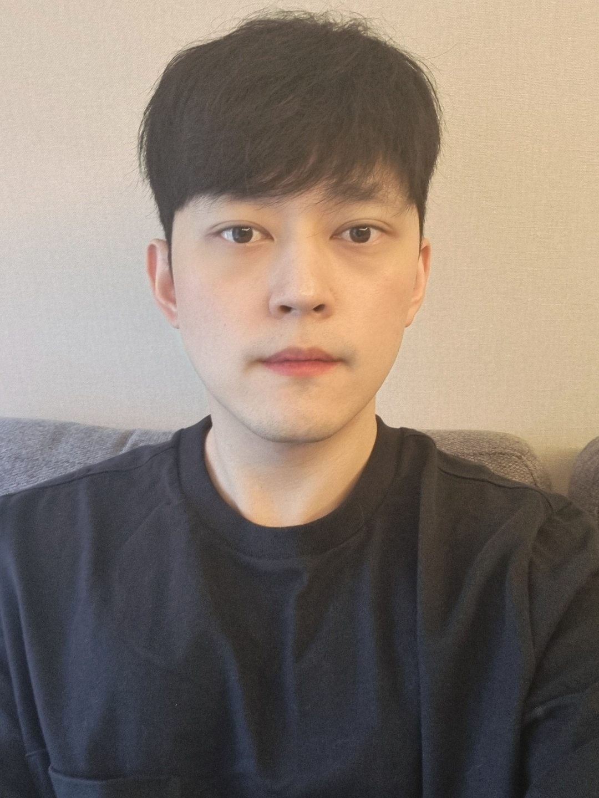

<style>
    body {
      font-family: Arial;
    }
    
    .split {
      height: 100%;
      width: 20%;
      position: fixed;
      z-index: 1;
      top: 0;
      overflow-x: hidden;
      padding-top: 20px;
    }
    
    .left {
      left: 0;
    }
    
    .right {
      right: 0;
    }
    
    .centered {
      position: absolute;
      top: 50%;
      left: 50%;
      transform: translate(-50%, -50%);
      text-align: center;
    }

    .nocentered {
      position: absolute;
      top: 50%;
      left: 50%;
      transform: translate(-50%, -50%);
    }
    
    .centered img {
      width: 150px;
      border-radius: 10%;
    }
    </style>

<section class="aboutme post_content">

    <div class="split left">
        <div class="centered">
            
            <h1>Jong Hwi Park</h1>
        </div>
      </div>
      
      <div class="split right">
        <div class="nocentered">
            <h4>UCSD Computer Science Bachelor</h4>
            <h4>Yonsei University AI Master</h4>

            <h4>AI Engineer / Data Scientist</h4>
            <h4>Working @EMRO, South Korea</h4>
            <h4>Contact : papercat404@gmail.com</h4>
        </div>
      </div>
</section>
